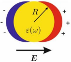
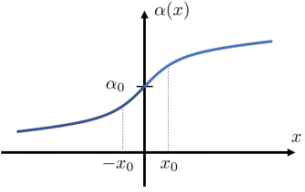
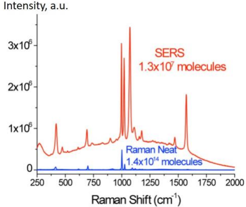

Y18 (2018) — English translation
Surface-enhanced Raman spectroscopy (SERS) is one of the most striking optical phenomena discovered in the last 40 years. SERS is based on plasmon resonance—a strong increase in the electric field near metal nanobeads under certain conditions. To determine these conditions and understand how SERS works, it is necessary to learn how to describe the properties of a metal placed in an alternating electromagnetic field.
Let us recall that the properties of matter in an electric field obey the following relations: $$\vec{D}=\varepsilon_0\varepsilon\vec{E}\quad\vec{D}=\varepsilon_0\vec{E}+\vec{P} $$ где $\vec{E}$ и $\vec{D}$ — напряженность и индукция электрического поля соответственно, $\varepsilon$ — диэлектрическая проницаемость вещества, $\vec{P}$ — вектор поляризации (дипольный момент единицы объема), $\varepsilon_0=8{,}85\cdot{10^{-12}}~\text{F}/\text{m}$ - electric constant. At the interface between two media in the absence of free charges, the tangential component of the intensity vector and the normal component of the electric field induction vector are continuous. In the case of an alternating electric field, the dielectric constant of a substance (including metals) depends on the frequency of the electromagnetic field.
Let's consider an infinite space filled with a metal: positively charged ions form a regular crystal lattice, free electrons move in the space between them, the concentrations of charges of both signs are the same and equal to $n$.
A uniform alternating electric field $\vec{E}\sin\omega t$ is created inside the metal. The ions are infinitely heavy and immobile, and the effective masses of the electrons are $m$. Within the framework of the simplest model, we can assume that the field acting on an individual electron coincides with $\vec{E}\sin\omega t$. All other forces (including dissipative ones) are small.
Let us consider a dielectric ball with permittivity $\varepsilon$ in a uniform stationary electric field $\vec{E}$. In a uniform field, the moving charges inside the ball are displaced, and the field in the system can be represented as a superposition of the external field $\vec{E}$ and the field from two oppositely charged balls separated by a small distance along the vector $\vec{E}$ (see Fig. 1).
Let us consider a dielectric ball with permittivity $\varepsilon$ in a uniform stationary electric field $\vec{E}$. In a uniform field, the moving charges inside the ball are displaced, and the field in the system can be represented as a superposition of the external field $\vec{E}$ and the field from two oppositely charged balls separated by a small distance along the vector $\vec{E}$ (see Fig. 1).

Let us study the behavior of a metal ball of radius $R$ in the field of a plane wave with frequency $\omega$ and amplitude $\vec{E}_0$. It turns out that if the wavelength and depth of penetration of the field into the metal are much greater than the size of the ball, then its behavior is similar to the behavior of a dielectric ball in a constant electric field, only the value $\varepsilon(\omega)$, similar to that calculated in the previous paragraph, must be taken as the dielectric constant. As the wave passes, the amplitude of the external field at the location of the ball changes $\vec{E}=\vec{E}_0\cos\omega t$, and the dipole moment also changes $\vec{d}=\vec{d}_0\cos\omega t$.
A significant increase in the amplitude of the electric field inside and outside the ball at frequency $\omega_{res}$ is called plasmon resonance. We got an infinite answer because we did not take energy dissipation into account. Now let's take dissipation into account and assume that the main losses in the system are associated with dipole radiation.
Let's move on to the second part of the problem and consider Raman scattering, which also underlies SERS. Let's start the conversation by discussing the structure of molecules. We will imagine the molecule as a set of weights (atoms) connected to each other by springs (chemical bonds). For simplicity, in what follows we consider a molecule consisting of only two atoms.
A complex molecule will be characterized not by one frequency $\omega_0$, but by a whole spectrum of natural frequencies. Knowledge of this spectrum allows us to unambiguously identify the substance with which we are dealing. This is the main idea of SERS. Let us study the behavior of a molecule in an external electric field $\vec{E}_0\cos\omega t$. For simplicity, we will assume that the atoms are not charged, i.e. in the absence of an external field, the molecule does not have a dipole moment. However, in an external field, like a metal ball, the molecule is polarized, i.e. acquires a dipole moment $$\vec{d}=\varepsilon_0\alpha\vec{E}_0\cos\omega t $$ где $\alpha$ – поляризуемость молекулы. Здесь мы считаем, что направление индуцированного дипольного момента $\vec{d}$ совпадает с направлением внешнего поля
Механические колебания, изученные в предыдущем пункте, никогда не прекращаются, атомы в молекуле все время дрожат. Это означает, что величина отклонения расстояния между атомами от положения равновесия $x$ изменяется со временем, $x=x_0\cos\omega_0t$. В свою очередь, способность молекулы поляризоваться зависит от взаимного расположения атомов, то есть $\alp ha=\alpha(x)$ (см. рис.2).
Механические колебания, изученные в предыдущем пункте, никогда не прекращаются, атомы в молекуле все время дрожат. Это означает, что величина отклонения расстояния между атомами от положения равновесия $x$ изменяется со временем, $x=x_0\cos\omega_0t$. В свою очередь, способность молекулы поляризоваться зависит от взаимного расположения атомов, то есть $\alpha=\alpha(x)$ (see Fig. 2).

The presence of peaks at frequencies other than $\omega$ is called Raman scattering. In order for the detector to receive a good signal, it is necessary to place the molecule in a strong electric field. This strong field can be created using plasmon resonance. This is the main difference between the idea of SERS and conventional Raman spectroscopy.
Let us consider a ball with dielectric constant $\varepsilon(\omega)$ in a uniform alternating field of amplitude $\left|\vec{E}_0\right|$ under plasmon resonance conditions.
The metal particle amplifies not only the original radiation with amplitude $\left|\vec{E}_0\right|$, but also the dipole radiation that the molecule generates. This process can also be characterized by the amplification factor $g'(\omega, \omega_0)$. If the frequency $\omega$ of the external field is large compared to the frequency $\omega_0$ of the natural vibrations of the molecule, we can assume $g'\approx{g}$. Then the signal intensity in the SERS experiment increases compared to conventional Raman spectroscopy by $g^4$ times.
In real experiments, to amplify a signal, they usually study not just one molecule, but a large number of them at once. The radiation from different molecules in such experiments is not coherent, therefore the total intensity of radiation from $N$ molecules is equal to $NI_0$, where $I_0$ is the intensity of radiation from one molecule. An example of the results of such measurements is shown in Fig. 3.

Spectrum of the Raman signal. The upper curve corresponds to the SERS experiment, the lower curve corresponds to conventional Raman spectroscopy. The horizontal axis represents the magnitude of the Raman shift, $k_0=\omega_0/c$, and the vertical axis represents the radiation intensity in arbitrary units. Please note that in these two experiments a different number of molecules participated in the formation of the signal, see the captions on the graph.
Source: https://pho.rs/p/3042